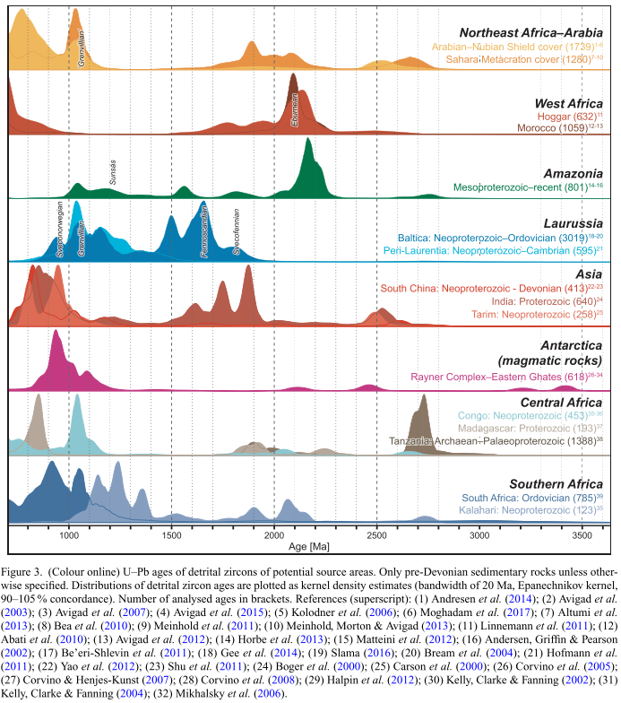
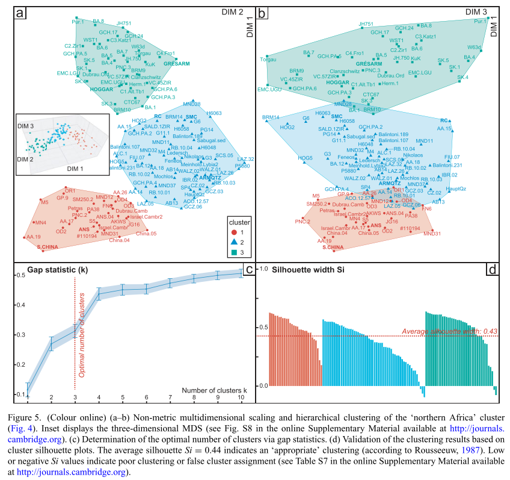
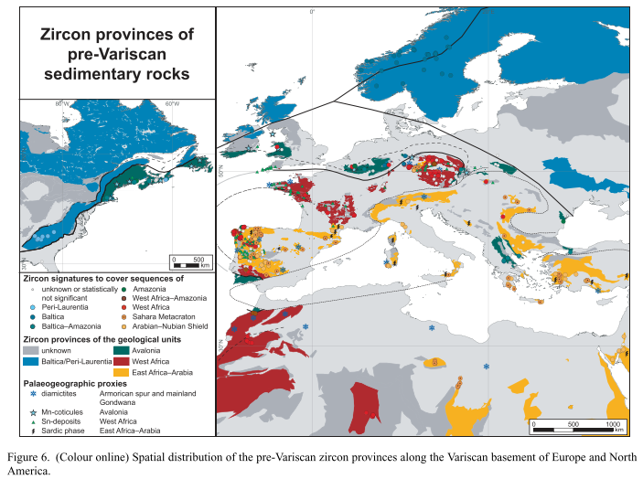

Pre-orogenic detrital zircon record of Peri-Gondwana
The use of modern approaches to analyze detrital zircon provenance data challenges existing paleogeographic models and refines our understanding of the tectonic history of ancient continental blocks. In particular, detrital zircon provenance analysis may contributes significantly to our understanding of the pre-orogenic paleogeography, the existence and extent of ancient oceanic lithosphere, the operation of large-scale sediment dispersal systems, and the processes of crustal growth and evolution in different parts of the world.
We employ statistical approach to analyze the detrital zircon age spectra to understand the provenance of sedimentary rocks and reconstruct paleogeography. Our study focuses on the Peri-Gondwanan crust north of Africa and adjacent areas incorporated in the Variscan orogen.
Database
We therefore compiled ca. 60.000 detrital zircons U-Pb ages from 770 Precambrian to Lower Paleozoic sedimentary rocks samples sourced from 160 publications. By analyzing such a vast compilation of zircon ages, we minimized potential biases arising from incomplete or limited datasets. This approach enhances the reliability of the provenance interpretations and their implications for understanding the tectonic history of the Peri-Gondwanan.

Method and results
For the statistical analyses, we include multidimensional scaling and density-based clustering to identify provenance end-member populations representing distinct source regions.

By comparing the detrital zircon age spectra of Peri-Gondwanan samples with those from known source areas, we identified four distinct zircon provinces:
Laurussian Zircon Province: Characterized by Meso- to Paleoproterozoic zircon crystals with major age peaks at 0.95 Ga, 1.05-1.15 Ga, 1.5-1.65 Ga, and 1.8 Ga.
Avalonian Zircon Province: Predominantly contains Mesoproterozoic zircon populations with peaks at 1.2 Ga, ~1.5 Ga, and 2.1-2.2 Ga, suggesting an Amazonian signature.
West African Zircon Province: Marked by the Eburnean (2.1 Ga) peak and a 1.8-2.0 Ga peak, lacking ‘Grenvillian’ (1.0 Ga) zircons. This distribution matches that of sedimentary rocks covering the West African Craton.
East African–Arabian Zircon Province: Features a 1.8–2.0 Ga peak, a subordinate Eburnean peak, a modest 2.5–2.7 Ga peak, a significant ~1.0 Ga ‘Grenvillian’ peak, and a ~800 Ma peak, resembling sedimentary rocks from Egypt, Israel, Jordan, and Iran.

Major implications
Testing and Refining Paleogeographic Reconstructions: By identifying the source regions of sediments, the analysis allows for a reassessment of the paleogeographic positions of continental blocks. For instance, our study reveals that Iberia, previously believed to have a West African provenance, likely originated from an East African-Arabian source.
Identifying Ancient Oceanic Lithosphere: The absence of specific zircon age signatures can be used to infer the presence or absence of oceanic lithosphere between continental blocks. Our study found no evidence of additional oceanic lithosphere besides the Rheic Ocean, suggesting a vast and contiguous Peri-Gondwanan shelf.
Reconstructing Sediment Dispersal Patterns and Super-Fan Systems: Analyzing detrital zircon provenance helps to understand the pathways of ancient sediment transport and the existence of large-scale sediment dispersal systems. The identification of distinct zircon provinces led to the proposal of two independent super-fan systems, the West and East Gondwana super-fan systems, which supplied sediments to the northern Peri-Gondwanan shelf.
Understanding Crustal Growth and Evolution: The distribution of zircon ages provides information about the timing and nature of magmatic and metamorphic events that contributed to the formation of continental crust. Our findings on the age distributions within each zircon province shed light on the crustal evolution of different regions within Peri-Gondwana.
Correlating Litho-Biostratigraphic Units and Terranes: Detrital zircon provenance analysis can aid in correlating rock units and terranes across vast distances, even when they are now separated by tectonic processes. Our study’s identification of similar zircon age patterns in geographically disparate regions supports the correlation of certain terranes and lithostratigraphic units.